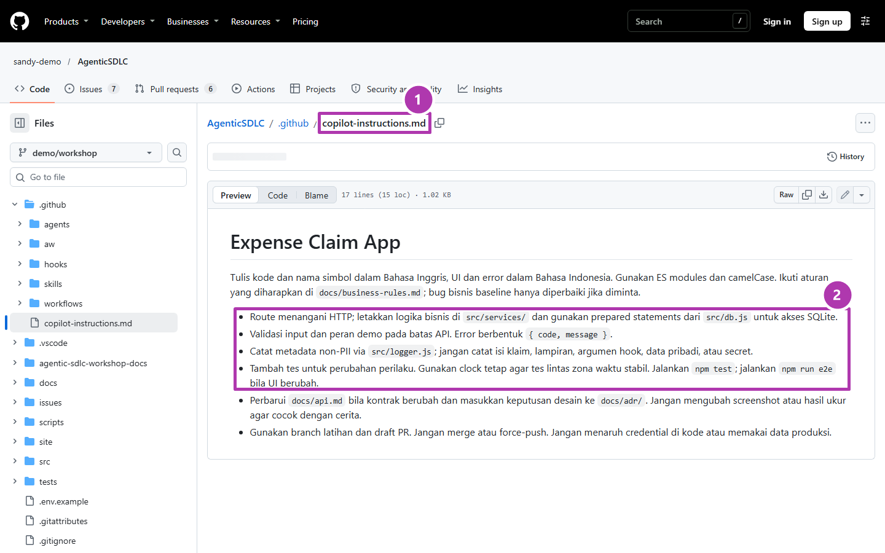
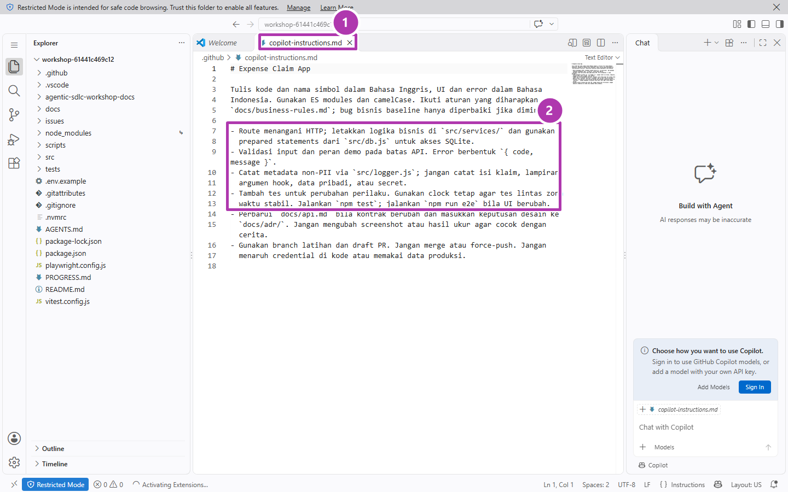
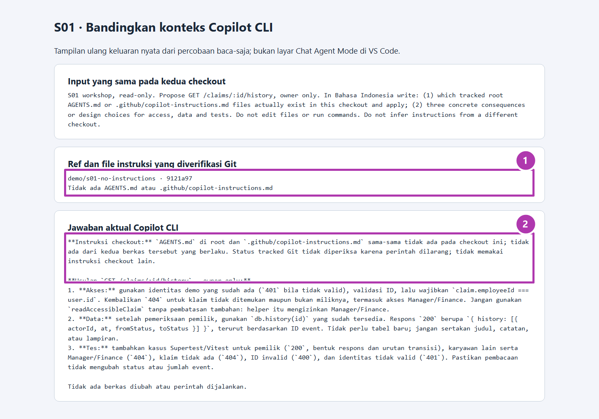
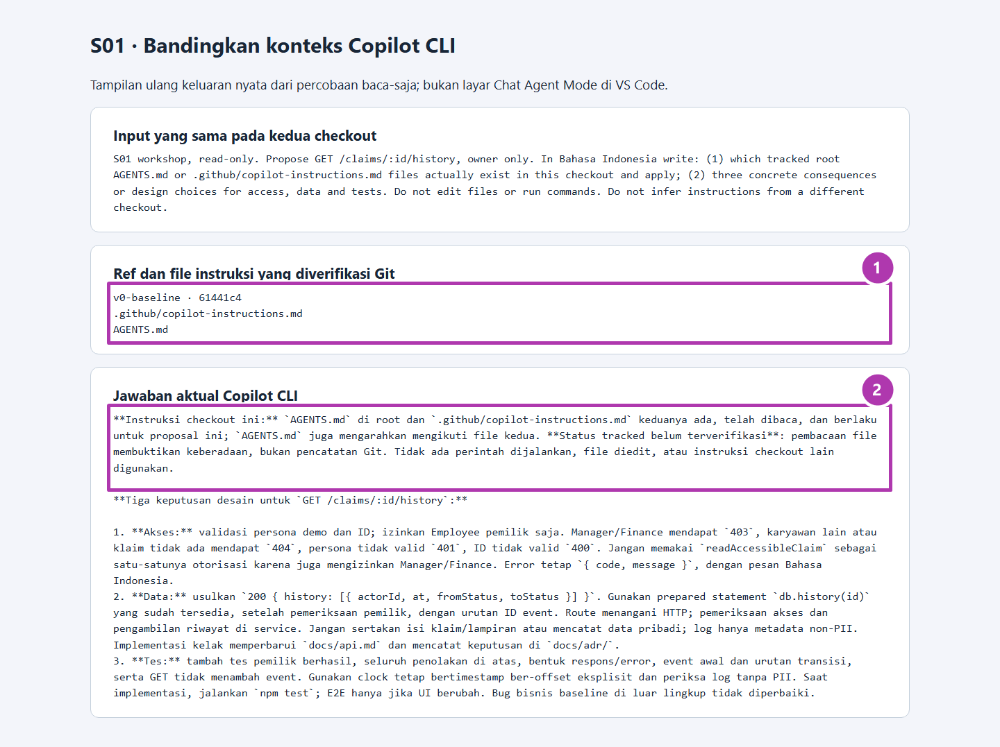
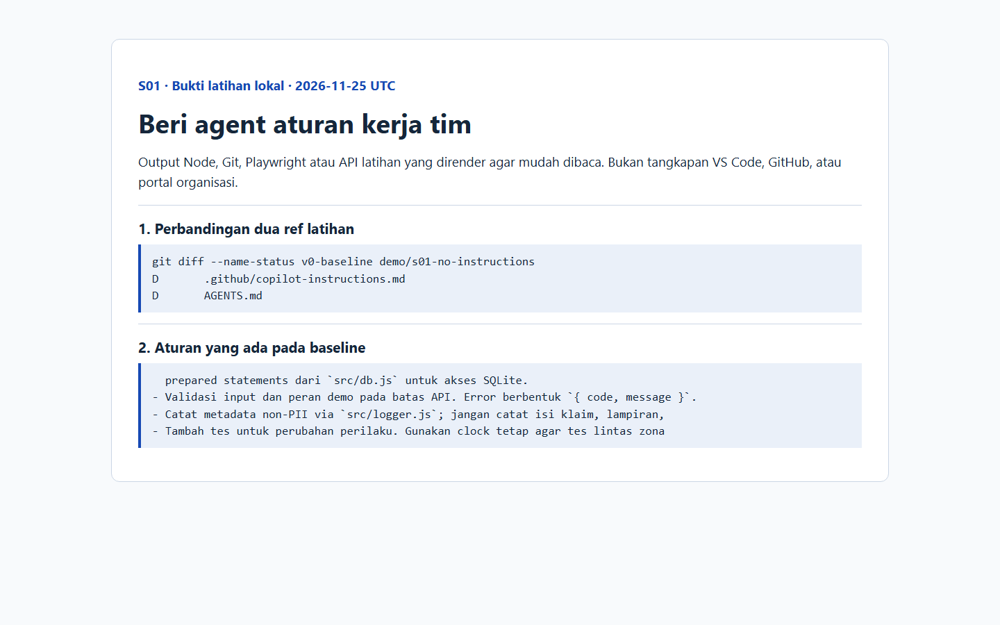
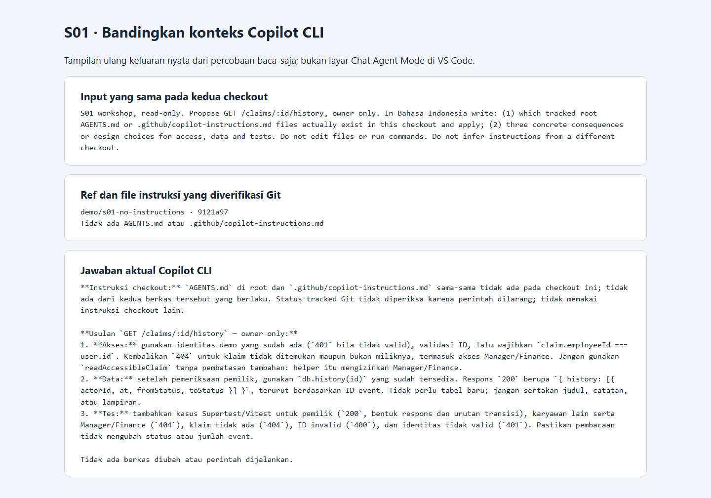
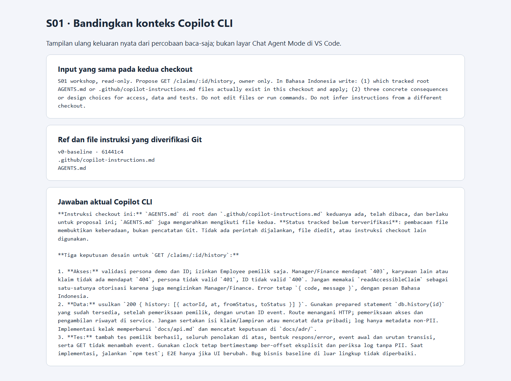
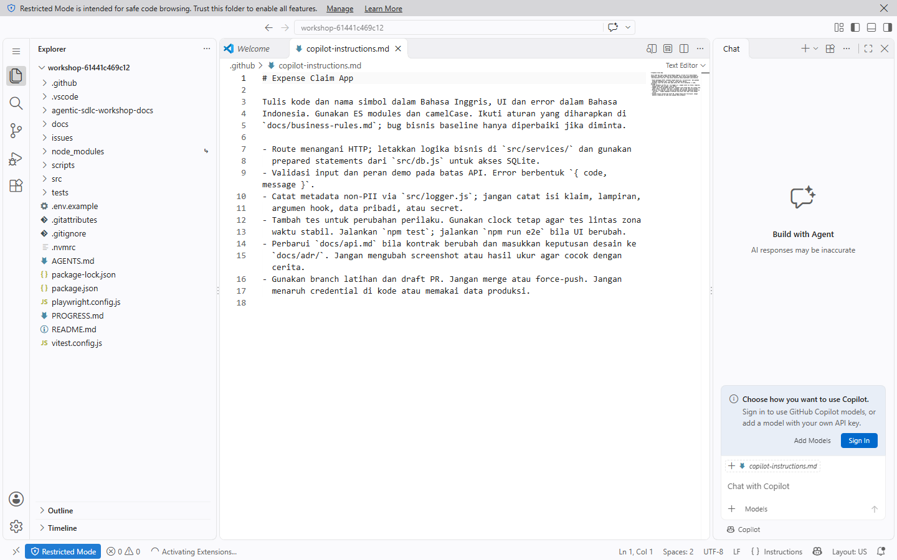

S01 · Level 1 — Inner loop
Beri agent aturan kerja tim
Beri Copilot permintaan riwayat klaim yang sama di dua checkout, satu dengan instruksi tim dan satu tanpa. Bandingkan apakah rencana menyebut format error, log tanpa data pribadi, dan tempat logika bisnis. Tidak perlu mengedit kode untuk membandingkannya.
Status latihan: Dua rencana sudah dibandingkan lewat Copilot di terminal; perbandingan di Chat VS Code belum direkam.. Lihat diagram interaksi · Ikuti langkah · Cek hasil · Langkah live · Ulangi dari awal.
Masalah yang dihadapi
Rani diminta merencanakan fitur riwayat klaim. Kalau klaim tidak ditemukan, apakah API harus mengirim teks biasa atau kode error dan pesan? Bima ingin format { code, message } dengan pesan bahasa Indonesia, tetapi aturan itu belum ada di checkout awal.
Kerugian: Rani harus menunggu koreksi Bima untuk keputusan kecil yang seharusnya bisa dipakai ulang oleh seluruh tim.
Masalah pada baseline
src/routes/approvals.js
Lihat potongan atau catatan sumber
const claim_rows = db.approvalQueue(req.demoUser);Solusi dan alur
Beri Copilot permintaan riwayat klaim yang sama di dua checkout, satu dengan instruksi tim dan satu tanpa. Bandingkan apakah rencana menyebut format error, log tanpa data pribadi, dan tempat logika bisnis. Tidak perlu mengedit kode untuk membandingkannya.
Alur kerja ringkas
DeveloperKirim prompt yang sama
Hasil: Pakai dua folder latihan, satu dengan instruksi tim dan satu tanpa. Minta rencana riwayat klaim, bukan edit kode.
CopilotBaca aturan di folder
Hasil: Dengan instruksi, rencana menyebut service, format error, log tanpa data pribadi, dan jam tetap untuk tes.
Tech LeadBandingkan dua rencana
Hasil: Hasil pembanding berasal dari Copilot di terminal. Tidak ada perubahan kode atau tes endpoint dari percobaan baca-saja ini.
Diagram interaksi
Rani membandingkan dua rencana dari prompt yang sama.
Rencanakan riwayat klaim, tanpa edit
-
RaniVS Code keCopilotChat / terminal
-
CopilotChat / terminal keAturan timFolder latihan
-
Aturan timFolder latihan keCopilotChat / terminal
-
CopilotChat / terminal keRaniVS Code
-
RaniVS Code keBimaReview rencana
Langkah demo
Yang kamu lakukan
- Di VS Code, pilih File → Open Folder untuk dua folder latihan: satu dengan instruksi tim dan satu tanpa. Jangan pakai folder kerja utama.
- Di masing-masing folder, pilih Chat → Agent. Kirim prompt rencana riwayat klaim yang sama dan minta Copilot tidak mengedit kode.
- Sebagai reviewer, bandingkan dua jawaban: cari pemisahan logika bisnis, format error yang sama, log tanpa data pribadi, dan rencana tes. Latihan ini tidak perlu PR atau approval.
Issue adalah tiket kerja. PR (pull request) adalah usulan perubahan; jika masih draft, hasilnya belum digabung. Files changed atau Changes menunjukkan file yang berubah. Checks menunjukkan hasil tes otomatis.
Ikuti alur GitHub dari tiket sampai review jika latihanmu memakai PR. Tautan contoh di bawah hanya membuka hasil yang sudah ada.
Contoh dan cara cek hasilnya
Kenali aturan yang akan dicari di jawaban
Baca instruksi tim untuk format error, log, akses database, dan tes. Perintah di bawah membandingkan daftar file instruksi di kedua versi latihan; tidak ada kode aplikasi yang diubah.
Baca aturan Copilot di repo workshop
git diff --name-status v0-baseline demo/s01-no-instructions -- AGENTS.md .github/copilot-instructions.md
Perbesar S01-02-instructions-file-annotated.pngSumber GitHub · 1. Di Code, buka .github → copilot-instructions.md. · 2. Baca pemisahan route/service, format error, logger metadata, dan tes. Foto ini dari GitHub, bukan hasil Agent Mode. Temukan file konteks di VS Code
Di folder v0-baseline, tekan Ctrl+P lalu ketik jalur file di bawah. Baca aturan yang nanti dicari di rencana. Folder demo/s01-no-instructions sengaja tidak memuat aturan ini.
Baca isi instruksi di versi awal
.github/copilot-instructions.md
Perbesar S01-vscode-instructions-annotated.pngScreenshot nyata VS Code Web lokal · v0-baseline · 1. Di VS Code, buka file copilot-instructions.md. · 2. Baca aturan service, validasi, error Indonesia, log metadata, dan tes. Foto membuktikan file ada, bukan hasil Agent Mode. Kirim permintaan yang sama di dua folder
Buka Chat → Agent di folder latihan tanpa instruksi dan kirim prompt. Ulangi persis di folder yang memuat instruksi. Bandingkan rencana yang muncul, bukan perubahan kode.
Buat rencana endpoint GET /claims/:id/history untuk riwayat klaim pemiliknya. Jangan edit file.Cek apakah rencana mengikuti aturan tim
Periksa sendiri apakah rencana membahas service, pesan Indonesia, log tanpa data pribadi, dan tes akses pemilik. Tidak perlu menjalankan tes endpoint karena latihan ini hanya membuat rencana.
Bandingkan dua jawaban nyata
Bukti yang tersedia adalah dua sesi Copilot CLI (Copilot di terminal) yang hanya membaca kode. Perintah membantu memastikan dua folder memang berbeda pada file instruksi. Foto Chat VS Code untuk perbandingan ini belum ada.
git diff --name-status v0-baseline demo/s01-no-instructions -- AGENTS.md .github/copilot-instructions.md
Perbesar S01-cli-without-instructions-annotated.pngKeluaran nyata Copilot CLI · demo/s01-no-instructions · 1. Git menemukan 0 file instruksi pada ref ini. · 2. Baca proposal akses, data dan tes; belum ada diff. Bukan layar Chat VS Code.


Cek hasil
Cek daftar file: demo/s01-no-instructions tidak memuat dua file dan v0-baseline memuat keduanya. Jawaban dengan instruksi mengikat keputusan ke service, log tanpa data pribadi, pesan Indonesia, dan clock tetap. Keduanya baca-saja: tidak ada daftar perubahan atau tes endpoint.
Bukti latihan terverifikasi


Perbesar S01-cli-with-instructions-annotated.pngLangkah live
Prasyarat dan petunjuk pengambilan bukti
Siapkan dua checkout latihan terpisah dan Copilot Chat → Agent di VS Code. Perintah dan input harus sama; satu checkout tanpa dan satu dengan instruksi. Tinjau hasil sebelum menerima edit.
S01-before.pngPada checkout tanpa instruksi, jalankan prompt “Tambah endpoint GET /claims/:id/history yang mengembalikan riwayat klaim pemiliknya.” Tunjukkan Source Control. Foto baru sah kalau hasil awal benar-benar memiliki daftar perubahan.
S01-01-without-instructions.pngDi Source Control buka Changes lalu file yang dibuat; perlihatkan ref tanpa instruksi dan bagian yang disentuh. Jangan promosikan hasilnya sebelum tes.
S01-03-with-instructions.pngPada checkout yang memuat instruksi, kirim prompt identik. Buka Changes dan sorot batas otorisasi pemilik, error Indonesia, logging non-PII, dan tes; tandai jika ada yang tidak dibuat.
S01-after.pngBuka kedua daftar perubahan di split editor dan bandingkan dengan prompt yang sama. Foto bukan penilaian kualitas otomatis; bukti lulus adalah daftar perubahan dan tes yang benar.
Sebelum dan sesudah
S01-before.pngS01-after.png| Bagian | Sebelum | Sesudah / target |
|---|---|---|
| Perilaku | Branch tanpa AGENTS.md dan copilot-instructions.md. | Kedua file tersedia pada v0-baseline; perbedaan diff hasil agent belum direkam. |
| Bukti visual | Belum direkam. | Belum direkam. |
| Keputusan | Peserta membaca keadaan awal. | Manusia memeriksa hasil sebelum meneruskan. |
Manfaat
- Reviewer bisa fokus ke keputusan, bukan mengulang konvensi.
Bukti dan sumber
Template issue S01 · Data latihan dan pengukuran.


Perbesar S01-local-result.png

Perbesar S01-cli-without-instructions.png

Perbesar S01-cli-with-instructions.png

Perbesar S01-vscode-instructions.pngBukti GitHub live
4 layar yang belum direkam
S01-before.pngS01-01-without-instructions.pngS01-03-with-instructions.pngS01-after.png
Ulangi latihan
Tinggalkan checkout yang sudah diedit dan buat checkout baru dari v0-baseline. Jangan pakai git reset --hard atau git clean pada direktori kerja bersama.
npm run reset -- --fresh